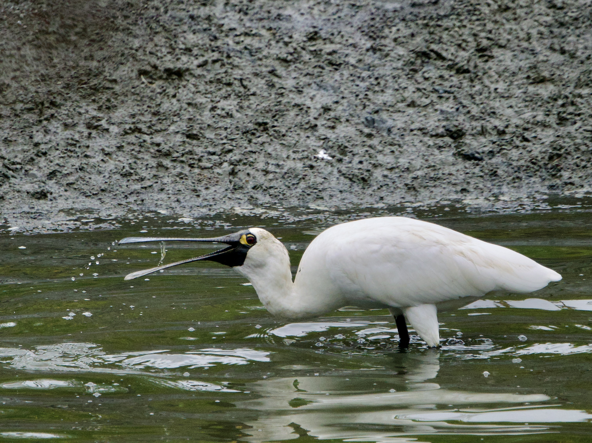
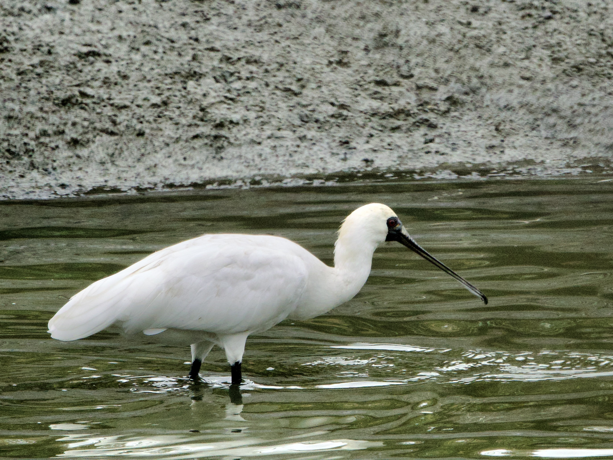

Black-faced Spoonbill
Platalea minor
Order: Pelecaniformes
Family: Threskiornithidae

A large white wading bird with a dark spatulate bill, red eyes, and black skin around the face. Adult has yellow skin around the eyes.

Younger birds lack the yellow skin around the eyes. Forages by sweeping the bill from side to side in shallow water.